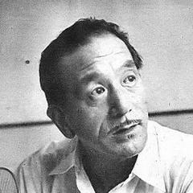
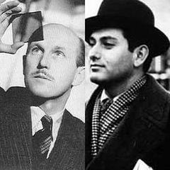
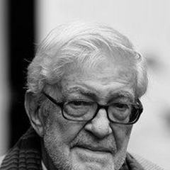

The Silent Era
Cinema is invented and learns its language: trick effects, editing, the close-up, the epic. With no spoken dialogue, directors told stories entirely through image, movement and music.


The Golden Age
Sound arrives and the studio system matures. Genres crystallise, national cinemas flourish in Japan, Italy, India and France, and the idea of the director as an author takes hold.







The Modern Masters
New Waves break the rules in Paris, Rome and beyond, while New Hollywood hands control to directors. Cinema turns personal, political and formally daring.





The New School
Global, independent and genre-bending. Festivals and home video build new audiences, digital tools arrive, and filmmakers from Tehran to Seoul to Hong Kong redefine what world cinema looks like.


Schools
The main schools, movements and national cinemas that connected the filmmakers.